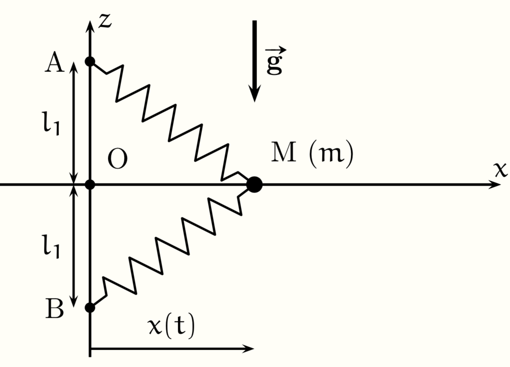

PrepOral
[MPSI] [Maison] [6]
Equilibre avec deux ressorts
Enoncé
Considérons un point matériel $M$ de masse $m$ se déplaçant sans frottement le long de l’axe Ox, son abscisse est notée $x(t)$.
Il est en outre relié à deux points fixes A et B par des ressorts identiques, de raideur k et de longueur à vide $l_0$. On donne
OA = OB = $l_1$.
1. Déterminer les positions d’équilibre $x_{eq}$ du point matériel le long de l’axe et discuter leur stabilité en
fonction de la valeur de $l_1$ par rapport à $l_0$.
2. Déterminer la période des oscillations autour des positions d’équilibre dans le cas où $l_1 < l_0$.

Commentaires
Encore jamais posé !
Corrigé
1) On calcule l'énergie potentielle du système : $$ E_p (x) = 2 \times \frac{1}{2} k \left( \sqrt{x^2+l_1^2} - l_0^2 \right) ^2$$ On résout $E_p'(x)=0$ et on trouve $x_1=0$ et $x_{2,3}= \pm \sqrt{l_0^2-l_1^2}$ si $l_1 \lt l_0$.
Pour la stabilité on développe à l'ordre 2 l'énergie potentielle autour de $x=0$ : $$E_p(x)= k (l_1-l_0)^2 + k \frac{(l_1-l_0)}{l_1} x^2$$ Ainsi, $x=0$ est une position stable si $l_1 \gt l_0$.
Pour les deux autres on peut dériver deux fois $E_p$ : $$E_p''(x_{2,3})=2k(1-l_1^2/l_0^2)$$ Ainsi, ces positions sont stables quand elles existent.
2) En injectant le DL à l'ordre 2 dans le PFD, on obtient une pulsation $\Omega_0=\sqrt{\frac{k(1-l_1^2/l_0^2)}{m}}$